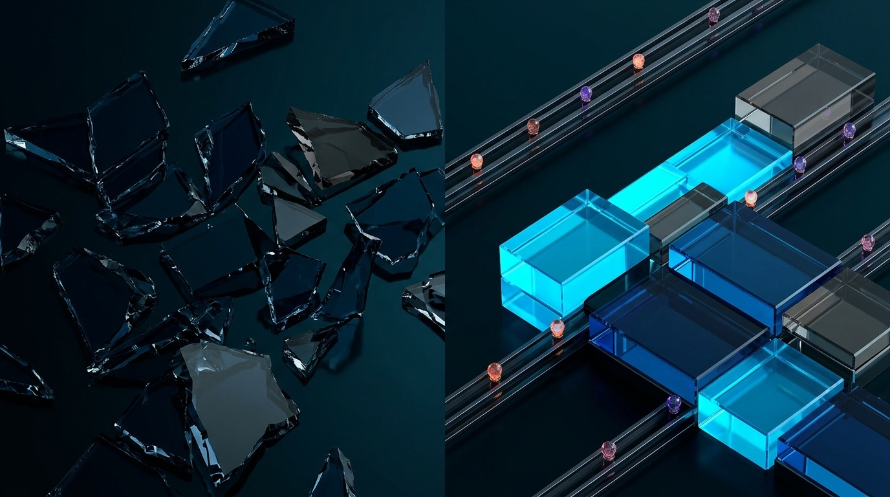

The complete practical handbook to building semantic recall for AI agents—covering structure-aware chunking, local Ollama vs. cloud embeddings, Chroma & pgvector, hybrid BM25 search, and on-demand MCP servers.
pgvector
Local Ollama & OpenAI Embeddings
Structure-Aware Chunking
Hybrid BM25 + RRF Fusion
MCP search_vault Server
Episodic & Semantic Hygiene
search_vault once to power Claude Code, Antigravity, Cursor, and VS Code without bloating AGENTS.md.
Tools like ripgrep, AST parsers, and knowledge graphs give your agent structural memory—they know how explicitly linked pieces connect. Semantic vector memory adds the missing half: instant recall by meaning, even when your query shares zero words with the note you wrote six months ago.
pgvectorp. 7| Dimension | Structural Memory (grep, AST, Knowledge Graphs) |
Semantic Memory (Embeddings + Vector Store) |
|---|---|---|
| Core Question | "How are known entities explicitly connected?" (The Map) | "What existing text means something close to this?" (Metal Detector) |
| Wins When… | Multi-hop dependency checks ("what imports AuthService?"), exact symbol lookups, and verified provenance chains. |
Fuzzy recall ("that postmortem where vacuum froze writes"), vocabulary mismatch (latency vs. slowness), and unlinked notes. |
| Fails When… | You forgot to add a [[wikilink]] or don't know the exact phrase/filename used in the original document. |
Searching exact identifiers (ERR_CONN_RESET_9 vs. _8) or assuming geometric closeness proves causal dependency. |
Don't over-engineer Day 1. Start local with zero servers to babysit; graduate to Postgres or dedicated cluster engines only when multi-user concurrency, transactional joins, or million-chunk scale demand it.
| Vector Store | Runs As | Sweet Spot | Honest Trade-Offs |
|---|---|---|---|
| Chroma Default Start |
Embedded Python lib (./memory_db) or Cloud |
Personal vaults & local agent memory up to ~100K+ chunks, zero ops | 3 lines to first query; disable usage stats via anonymized_telemetry=False. Single-writer focus. |
pgvectorPostgres 13+ |
CREATE EXTENSION vector; in PostgreSQL |
Teams already on Postgres needing ACID joins, backups & Row-Level Security | You manage Postgres & HNSW indexes; vectors >2,000 dims (3072d) need halfvec casting. |
| Qdrant Local / Server |
QdrantClient(path=...), Docker, or Cloud |
Rich JSON payload filtering with smooth jump from local folder to Rust cluster | More concepts (points, payloads); use collection_exists over deprecated recreate_collection. |
sqlite-vecSQLite C Ext |
Single .db file loaded directly into SQLite |
Ultra-portable CLI tools, desktop apps, and pairing with SQLite FTS5 |
Fast brute-force / quantized scans up to tens of thousands of chunks; minimal infra footprint. |
| Hosted DBs Pinecone, Weaviate, Turbopuffer |
Fully managed cloud API | Multi-device SaaS apps, tens of millions of vectors, and zero-DBA SLAs | Chunk text + vectors leave your machine; check region residency, retention SLAs, and metered tiers. |
| Model Name | Runs On | Dims | Context / Cost | Practical Engineering Notes |
|---|---|---|---|---|
text-embedding-3-small |
OpenAI API | 1536 |
8K • ~$0.02/1M | Cloud default; Batch API ~$0.01/1M. Supports Matryoshka dimensions shrinking. |
text-embedding-3-large |
OpenAI API | 3072 |
8K • ~$0.13/1M | Higher nuance ceiling; pass dimensions=1024 or halfvec for pgvector HNSW. |
nomic-embed-text |
Ollama Local | 768 |
2K–8K • $0.00 | 274 MB; fast on laptop CPU / Apple Silicon. Pass num_ctx: 8192 for chunks >2K tokens. |
mxbai-embed-large |
Ollama Local | 1024 |
512 cap • $0.00 | 670 MB; strong English benchmark score, but truncates past 512 tokens—chunk tight! |
bge-m3 / qwen3-embedding |
Ollama Local | 1024+ |
8K/32K • $0.00 | Top local picks for 100+ languages & long code/docs (qwen3-embedding:0.6b is ~639 MB). |
embeddinggemma |
Ollama Local | 768 |
2K • $0.00 | Google's 300M on-device model (~622 MB, Ollama ≥0.11.10); crisp multilingual local recall. |
nomic-embed-text and text-embedding-3-small live in incompatible coordinate spaces—even two 768d models assign totally different directions to the same idea. Always query with the exact model that built the index; if you switch models, wipe and re-embed.
Before wiring a vector store into your coding agent, always test it in the MCP Inspector (mcp dev memory_server.py). Seeing chunk boundaries, cosine similarity scores, and BM25 rank boosts side by side turns retrieval tuning from guesswork into a 5-minute visual check.
ERR_CONN_RESET_9)
[Postmortem > Root Cause] During the 02:14 UTC deploy, PgBouncer dropped idle TLS sockets with ERR_CONN_RESET_9, aborting unbatched migration writes across 40k customer rows…
[Idle Timeouts] Set server_idle_timeout = 120 when running multi-million row schema backfills…
search_vault separate from write tools (store_memory, reindex_vault) so you can grant safe search-only permissions whenever desired.768d), and cosine space so you immediately spot mismatched index configurations.where Pre-Filter: Combine natural language, exact error codes, and metadata filters ({"area": "infra"}) to eliminate cross-project noise before ranking.318 tok), and deterministic SHA-256 ID for click-through verification.1 - dist): Captures semantic paraphrase closeness ("2am row loss" → "02:14 UTC deploy... 40k customer rows") at 0.89.ERR_CONN_RESET_9 (which pure vectors blur with _8) and fuses both lists via Reciprocal Rank Fusion.AGENTS.md, the agent receives only ~600 cited tokens right when needed.
An embedding compresses an entire passage into a single point in high-dimensional space. Cram five unrelated topics into one giant chunk and that point drifts to the mushy average of all five—matching nothing well. Slice too thin and single sentences lose their subject.

"Postgres migration corrupted rows" and "database upgrade broke data" score ~+0.78 with zero shared words, vs. ~+0.12 for sourdough.
A 0.58 in nomic-embed-text can beat 0.79 in another model. Rank hits within one query; calibrate cutoffs visually on 20 real notes.
Chroma defaults to squared L2! Always pass metadata={"hnsw:space": "cosine"} so 1 - distance equals cosine similarity.
| Chunking Rule | Recommended Target | Why It Prevents Retrieval Failures |
|---|---|---|
| 1. Split on Structure First | # / ## / ### or AST nodes |
Authors already group coherent ideas under Markdown headings or classes/functions. Use token slicing only as a fallback when one section exceeds budget. |
| 2. Right-Size Token Window | 400–800 tokens( 512 safe default) |
Big enough to carry a complete explanation, small enough to fit inside strict local model caps (like mxbai-embed-large's 512-token ceiling) without dilution. |
| 3. Sliding Window Overlap | 10–15% overlap( 64 tok on 512) |
When an oversized section must be sub-split, repeating the trailing 64 tokens at the start of the next chunk ensures no key causal link is severed at a cut boundary. |
| 4. Atomic Code & Tables | Never cut mid-fence or mid-table | Half a Python signature or table rows detached from their column headers embed as noise. Isolate fenced code blocks before paragraph splitting. |
| 5. Strip Noisy YAML Blobs | Parse frontmatter into metadatas |
Keep tags, date, and status as filterable metadata fields instead of polluting the semantic vector with raw YAML boilerplate. |
A bare paragraph reading "We lost 40k rows in 90 seconds" has no idea which system or year it belongs to. Prepending a structured header right onto the embedded text routinely improves recall more than buying a larger embedding model.
Compute deterministic IDs via sha256(f"{source}::{idx}::{text}")[:24] and always call collection.upsert() (plain add() silently ignores duplicate IDs!).
Orphan GC rule: When a note is edited or deleted, old chunk hashes stay behind as ghosts. Run a blunt, bug-proof wipe before re-ingesting that file:coll.delete(where={"source": rel_path}).
Episodic (kind="episode"): Dated session summaries ("what we debugged today"). Append-only; filter by recency and prune monthly.
Semantic (kind="fact"): Distilled current truths. Before inserting, query k=1: if similarity ≥0.93, skip near-duplicates; if a fact changed (e.g., migrated DBs), supersede by upserting onto the old ID!
0.88 similarity misleads coding agents with high confidence. Whenever a tech decision changes, run coll.delete() or overwrite the exact fact ID—never hope new notes will simply outrank stale ones.
pgvector
Install once with pip install chromadb ollama openai tiktoken rank_bm25. Because the store accepts any embed_fn(texts) function, switching between free offline Ollama and OpenAI APIs is a one-line import swap.
chunking.py • Heading + Atomic Fence Splitterimport re, tiktoken
_enc = tiktoken.get_encoding("cl100k_base")
FENCE = chr(96) * 3 # Markdown code fence
def _win(txt: str, cap=512, ov=64):
toks = _enc.encode(txt)
if len(toks) <= cap: return [txt]
out, i = [], 0
while i < len(toks):
out.append(_enc.decode(toks[i:i + cap]))
if i + cap >= len(toks): break
i += cap - ov
return out
def chunk_markdown(text: str, src="") -> list[dict]:
text = re.sub(r"\A---\n.*?\n---\n", "", text, flags=re.S)
parts = re.split(f"({FENCE}.*?{FENCE})", text, flags=re.S)
out, stack, buf = [], [], ""
def flush():
nonlocal buf
hdr = " > ".join(h[1] for h in stack)
for p in (_win(buf.strip()) if buf.strip() else []):
out.append({"heading": hdr, "text": p})
buf = ""
for part in parts:
if part.startswith(FENCE):
flush(); buf = part; flush(); continue
for ln in part.split("\n"):
m = re.match(r"^(#{1,6})\s+(.*)", ln)
if m:
flush(); lv = len(m.group(1))
stack = [h for h in stack if h[0] < lv]
stack.append((lv, m.group(2).strip()))
else: buf += ln + "\n"
flush()
return [{**c, "text": f"[{src} > {c['heading']}]\n"
+ c["text"]} for c in out]vault_db.py • Idempotent Chroma Storeimport hashlib
from pathlib import Path
import chromadb
from chromadb.config import Settings
from chunking import chunk_markdown
def get_coll(path="./memory_db", name="vault"):
cfg = Settings(anonymized_telemetry=False)
cli = chromadb.PersistentClient(path=path, settings=cfg)
return cli.get_or_create_collection(
name=name, metadata={"hnsw:space": "cosine"}
)
def cid(src: str, i: int, txt: str) -> str:
raw = f"{src}::{i}::{txt}".encode()
return hashlib.sha256(raw).hexdigest()[:24]
def ingest_file(root: Path, file: Path, embed_fn):
coll, rel = get_coll(), str(file.relative_to(root))
coll.delete(where={"source": rel}) # purge stale
chunks = chunk_markdown(file.read_text("utf-8"), rel)
if not chunks: return 0
txts = [c["text"] for c in chunks]
coll.upsert(
ids=[cid(rel, i, t) for i, t in enumerate(txts)],
documents=txts, embeddings=embed_fn(txts),
metadatas=[{"source": rel, "heading": c["heading"]}
for c in chunks],
)
return len(chunks)
def search(query: str, embed_fn, k=6, where=None):
r = get_coll().query(query_embeddings=embed_fn([query]),
n_results=k, where=where)
return [{"similarity": 1 - d, **m, "text": doc}
for doc, m, d in zip(
r["documents"][0], r["metadatas"][0],
r["distances"][0])]# OPTION A: Local Ollama (ollama pull nomic-embed-text)
import ollama
def embed_local(texts: list[str]):
return ollama.embed(
model="nomic-embed-text", input=texts,
options={"num_ctx": 4096}, # prevent 2K cut
)["embeddings"]
# OPTION B: Cloud API Batch (needs OPENAI_API_KEY)
from openai import OpenAI
_oa = OpenAI()
def embed_cloud(texts: list[str]):
res = _oa.embeddings.create(
model="text-embedding-3-small", input=texts
)
return [d.embedding for d in res.data]pgvector HNSW-- Run once in psql (match vector(N) to your model)
CREATE EXTENSION IF NOT EXISTS vector;
CREATE TABLE chunks (
id TEXT PRIMARY KEY, source TEXT NOT NULL,
heading TEXT, content TEXT NOT NULL,
embedding vector(768) -- 768 nomic | 1536 openai
);
CREATE INDEX ON chunks
USING hnsw (embedding vector_cosine_ops);
# psycopg v3 + pgvector (<=> is cosine distance)
from pgvector.psycopg import register_vector
register_vector(conn)
rows = conn.execute(
"SELECT source, 1 - (embedding <=> %s) AS sim "
"FROM chunks ORDER BY embedding <=> %s LIMIT 5",
(qvec, qvec)).fetchall()
Pure embeddings smooth away character-level precision—to a vector model, ERR_CONN_RESET_9, SKU-4810B, or useAuthSession() look nearly identical to close neighbors. Pairing dense vectors with classic BM25 lexical search gives you the best of both worlds.
hybrid.py)
Never average raw BM25 scores (unbounded 0..25+) with cosine similarity (-1..1). Fuse by rank position using RRF_K = 60:
import re
from rank_bm25 import BM25Okapi
from vault_db import get_coll, search
tok = lambda s: re.findall(r"\w+", s.lower())
def hybrid_search(query: str, embed_fn, k=6, leg=20):
vec_hits = search(query, embed_fn, k=leg)
got = get_coll().get(
include=["documents", "metadatas"]
)
docs, metas = got["documents"], got["metadatas"]
bm25 = BM25Okapi([tok(d) for d in docs])
sc = bm25.get_scores(tok(query))
kw_idx = [i for i in sorted(range(len(sc)),
key=lambda i: sc[i], reverse=True)[:leg]
if sc[i] > 0]
rrf, items = {}, {}
for r, h in enumerate(vec_hits):
key = (h["source"], h["text"][:80])
rrf[key] = rrf.get(key, 0.0) + 1.0 / (61 + r)
items[key] = h
for r, idx in enumerate(kw_idx):
key = (metas[idx]["source"], docs[idx][:80])
rrf[key] = rrf.get(key, 0.0) + 1.0 / (61 + r)
items.setdefault(
key, {**metas[idx], "text": docs[idx]}
)
top = sorted(rrf.items(),
key=lambda x: x[1], reverse=True)[:k]
return [{"rrf": s, **items[k_]} for k_, s in top]1 / (60 + rank) WorksA chunk ranked #1 by BM25 (exact match on ERR_CONN_RESET_9) jumps immediately into the winners circle even if vector search ranked it #18—while chunks respected by both legs float effortlessly to #1 overall. Zero fragile weight tuning required.
where=)Before adding complex ML, scope queries with cheap metadata tags: where={"area": "billing"} or SQL WHERE tenant_id = $1. Eliminating 80% of irrelevant folders upfront gives instant precision for free.
When your right chunk appears in the top 20 but not the top 3, pass the fused 20 candidates through a cross-encoder (local BAAI/bge-reranker-v2-m3 or Voyage's rerank API) to read (query, chunk) jointly and pick the exact top 5.
Match your exact use case to one of these five proven blueprints—from a 10-minute personal Obsidian second brain to a multi-tenant SaaS knowledge engine with database-enforced security.
| Recipe & Goal | Recommended Stack | Chunk & Index Strategy | Key Implementation Pattern |
|---|---|---|---|
| 1. Obsidian Second-Brain MCP Server | Local Chroma + Ollama nomic-embed-text + FastMCP / SDK v2 |
Markdown heading splitter (512 tok, 64 overlap) + frontmatter tags |
Expose search_vault + store_memory via MCP. Zero-code alt: install Obsidian Smart Connections (offline lookup) or Obsidian Copilot (hybrid QA). |
| 2. Codebase Architecture Semantic Search | Qdrant local or Chroma + qwen3-embedding:0.6b (32K ctx) + BM25 |
Split along AST classes/functions (never mid-block); prepend [filepath :: symbol] |
Pair with ripgrep: use hybrid search to discover "where do we throttle webhook retries?", then follow exact symbol imports via AST/LSP. |
| 3. Customer Support Docs (Zero Hallucination) | OpenAI text-embedding-3-small + Hybrid RRF + Cross-Encoder Reranker |
400-token help-article sections tagged with product_tier & doc_url |
Rerank top 20 → feed top 4 with strict abstention prompt: "Cite [Article URL] for every step; escalate if confidence is partial." |
4. Multi-Tenant Postgres pgvector w/ RLS |
PostgreSQL 17 + pgvector 0.8 HNSW + text-embedding-3-large (halfvec) |
chunks table joined to documents with tenant_id UUID NOT NULL |
Enforce ENABLE ROW LEVEL SECURITY on tenant_id = current_setting('app.tenant_id')::uuid + iterative HNSW scans so tenants never leak chunks. |
| 5. 100% Air-Gapped Laptop Vault | Pre-pulled Ollama (embeddinggemma or nomic) + Chroma (telemetry OFF) |
Separate vault-private collection on encrypted local SSD |
Set Settings(anonymized_telemetry=False); pre-pull weights once on Wi-Fi. Runs on CPU/Apple Silicon RAM with zero network packets ever sent. |
text-embedding-3-small ($0.02/1M), or ~$0.61 with -3-large. Daily incremental edits cost ~$0.0001, and local Ollama models cost $0.00 forever—no GPU required!
vault-private and general notes into vault-public; let search_vault query each with its own model and label origins!
Stuffing past notes into AGENTS.md taxes every single prompt turn whether relevant or not. Wrapping your hybrid retriever in a 40-line Model Context Protocol (MCP) server gives Claude Code, Antigravity, Cursor, and VS Code an on-demand search_vault superpower at zero idle token cost.
memory_server.py • Official Python SDK v2)# pip install "mcp[cli]" chromadb ollama rank_bm25 (v1 tutorials use FastMCP; v2 uses MCPServer)
import datetime, hashlib, sys
from mcp.server import MCPServer
from embed_ollama import embed_local as embed
from vault_db import get_coll
from hybrid import hybrid_search
mcp = MCPServer("vault-memory")
def _log(msg: str): # CRITICAL: stdio uses stdout for JSON-RPC — never call bare print()!
print(f"[vault-memory] {msg}", file=sys.stderr)
@mcp.tool()
def search_vault(query: str, limit: int = 6, path_prefix: str = "") -> str:
"""Semantic + BM25 keyword search across the user's knowledge vault and past decisions.
Call this BEFORE answering questions about past incidents, architecture, or user preferences.
Returns cited blocks formatted as [source_path > heading] ready for inline citation."""
hits = [h for h in hybrid_search(query, embed, k=limit * 2)
if not path_prefix or h["source"].startswith(path_prefix)][:limit]
if not hits: return "No matching memories found."
return "\n\n---\n\n".join(f"[{h['source']} > {h.get('heading') or 'root'}]\n{h['text']}" for h in hits)
@mcp.tool()
def store_memory(content: str, heading: str = "decisions", kind: str = "fact") -> str:
"""Save a self-contained debugging takeaway, architecture fact, or episode (1-5 sentences)."""
ts = datetime.datetime.now().isoformat(timespec="seconds")
mid = f"{kind}::" + hashlib.sha256(content.strip().lower().encode()).hexdigest()[:20]
get_coll().upsert(ids=[mid], documents=[content], embeddings=embed([content]),
metadatas=[{"source": f"agent/{kind}", "heading": heading, "kind": kind, "stored_at": ts}])
_log(f"upserted {mid}"); return f"Stored {mid} at {ts}."| Agent Client | Config File / CLI Command | Exact Wiring & Crucial Gotcha |
|---|---|---|
| Claude Code | Terminal one-liner (--scope user) |
claude mcp add vault-memory --scope user -- /abs/.venv/bin/mcp run /abs/memory_server.py → check via claude mcp list. |
| Antigravity & Cursor | mcp_config.json or ~/.cursor/mcp.json |
Top-level key is "mcpServers" with "command": "/abs/.venv/bin/mcp" and "args": ["run", "/abs/memory_server.py"]. |
| Claude Desktop | ~/Library/Application Support/Claude/claude_desktop_config.json |
Uses "mcpServers"; put OPENAI_API_KEY in "env" if using cloud embeddings, then fully quit & relaunch. |
| VS Code Copilot | .vscode/mcp.json (Agent Mode) |
Key-name trap: VS Code requires top-level "servers" (not "mcpServers") plus "type": "stdio"! |
search_vault solely by reading its Python docstring! Always state when to call it ("Call this BEFORE answering questions about past incidents...") and verify in browser first via uv run --with "mcp[cli]" mcp dev memory_server.py.
Recall@5 EvaluationProduction agent engineering layers three complementary memory tiers—always-on rules, structural graphs, and semantic RAG—backed by a tiny golden-set benchmark so chunking tweaks never silently regress quality.
| # | Dial to Turn | Symptom It Cures |
|---|---|---|
| 1 | Chunk structure & size | Right note missing, or mushy multi-topic soup |
| 2 | Prepend breadcrumb | Orphan paragraphs lacking system/topic identity |
| 3 | Embedding model | Weak paraphrase matching or multilingual gaps |
| 4 | Hybrid BM25 + RRF | Whiffs on error codes, SKUs, or symbol names |
| 5 | Metadata where= | Cross-project noise polluting top results |
| 6 | Cross-encoder rerank | Right hit sits at rank 8–15 instead of rank 1–3 |
Recall@5 Regression GateSave 20 real questions paired with the file you expect back. Run in 2 seconds after any pipeline tweak:
GOLDEN = [
("2am row loss", "ops/atlas-migration.md"),
("webhook backoff", "arch/webhooks.md"),
("ERR_CONN_RESET_9", "ops/atlas-migration.md"),
]
def eval_recall_at_k(search_fn, k=5) -> float:
hits = 0
for q, exp in GOLDEN:
srcs = {h["source"] for h in search_fn(q, k=k)}
if exp in srcs:
hits += 1
else:
print(f"MISS: {q!r} -> {srcs}")
pct = hits / len(GOLDEN)
print(f"Recall@{k}: {hits}/{len(GOLDEN)} ({pct:.0%})")
return pctAlmost every "dumb RAG" complaint traces back to one of seven mechanical bugs. Keep this diagnostic table within reach whenever retrieval scores look suspicious or an MCP client refuses to connect.
| Symptom / Failure Mode | Root Cause & 10-Second Fix |
|---|---|
| 1. Dimension error or pure-nonsense hits after changing models | Model mismatch: Index holds 768d Ollama vectors while query embeds 1536d OpenAI (or Chroma's 384d ONNX default). Wipe ./memory_db and re-embed 100% of chunks with one model. |
| 2. Everything scores ~0.58 and matches unrelated topics | Giant "vector soup" chunks: Whole notes embedded as single points. Split on Markdown headings first, cap at 400–800 tokens with 10–15% overlap, and prepend [path > heading]. |
| 3. Edited or deleted notes still return old ghost facts | Orphan content hashes / add() bug: Always write with coll.upsert(), and run coll.delete(where={"source": rel_path}) before re-ingesting any modified or deleted file. |
| 4. Exact error codes, SKUs, or function names miss completely | Dense embedding blind spot: Vector models blur character-level tokens. Add the 15-line rank_bm25 keyword leg and fuse via Reciprocal Rank Fusion (RRF_K = 60). |
| 5. Local Ollama recall degrades on longer code/prose chunks | Silent context truncation: mxbai-embed-large truncates past 512 tokens; nomic-embed-text defaults to 2048. Keep chunks ≤512 tokens or pass options={"num_ctx": 8192}. |
6. MCP server shows red dot or agent never calls search_vault |
GUI $PATH / stdio / key trap: Use absolute paths to .venv/bin/mcp, log only to sys.stderr (never print()), use "servers" in VS Code vs. "mcpServers" elsewhere, and write explicit "Call BEFORE..." docstrings. |
| 7. Agent cites a 6-month-old reversed decision as truth | Episodic/semantic mix-up: Tag entries with stored_at + kind, block near-duplicates (≥0.93), and supersede changed facts by upserting onto the existing ID instead of appending contradictions. |
hnsw:space = "cosine" set explicitly; index & query share one exact model.512 tok, fenced code intact) with [source > heading] prepended.stderr, Chroma telemetry disabled, sensitive vaults local.where={"source": path} before upserting hashes.Recall@5 Benchmarked: Tested against 20 real questions in MCP Inspector before agent rollout!